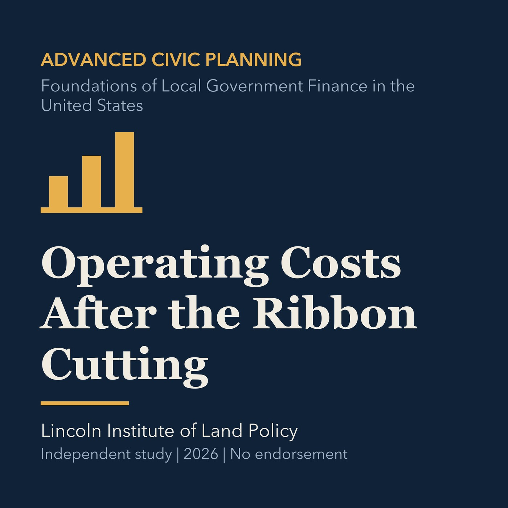

EPISODE 32
Operating Costs After the Ribbon Cutting
Identifies staffing, maintenance, renewal, and risk costs that continue after capital completion.

- Stable GUID
fa704026-b2c8-56b4-9a41-426d38b5db10- Release
- advanced-civic-planning-v2026.1
- SHA-256
2f9cf9d3f7161dfa2f2530bba88f58bf59c15071e33580bd19e4e3f994acd483